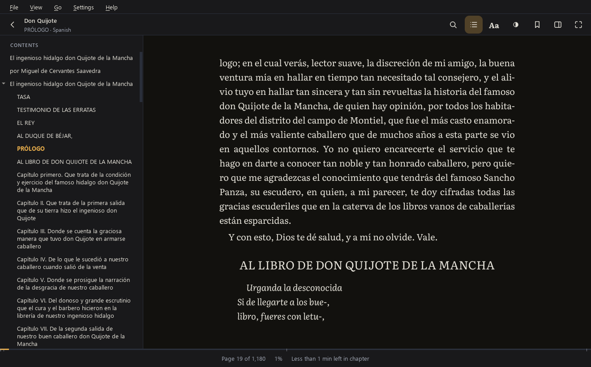
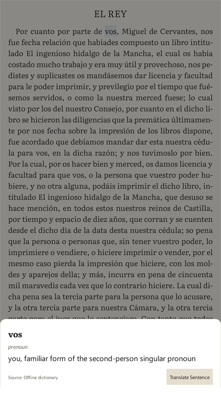

Biblioglot is a free, open-source e-book reader for Android, Windows and Linux. It opens your own DRM-free books (EPUB, PDF, Kindle files without DRM, FB2, comics, Word documents and more) and is built to make reading in a language you are learning easy: tap or right-click a word or a passage and its meaning appears next to it. Every word you look up is saved to your Word List, ready to practice as flashcards.


What Biblioglot does
- A library of your books, with covers, collections, search and reading progress.
- Comfortable reading: fonts, text size, margins, themes (day, sepia, night), two pages side by side, page-turn animations.
- Meanings of words and sentences from offline dictionaries, or, if you add your own Google Gemini key, from Gemini.
- Highlights in four colors, notes, bookmarks, and a Notebook you can export.
- A Word List and flashcard practice with spaced repetition.
- Reading statistics, read aloud with your device's voices, and the app in English or Spanish.
- No ads, no tracking and no account needed.
Download
| Windows 10 and 11 | Biblioglot.exe (one file, nothing to install) |
|---|---|
| Linux | Biblioglot-x86_64.AppImage (experimental) |
| Android | Coming to Google Play (in testing now) |
The source code is on GitHub, under the GNU GPL version 3.
Your Google Account and Google Drive
Biblioglot works without any account. Signing in with Google is optional and is used for one thing only: Sync, which keeps your books, reading positions, highlights, notes, bookmarks, Word List, flashcard progress, reading statistics and settings the same on all your devices (for example your phone and your computer).
When you turn Sync on, Biblioglot asks Google for permission to use a hidden folder in your own Google Drive
that only Biblioglot can see (the app data folder, Google's scope
drive.appdata). Biblioglot stores its sync files and copies of your books there. It cannot see or
change any other file in your Drive, and the data goes straight between your devices and your Drive: there is
no Biblioglot server, and the developer never receives it.
You can turn Sync off at any time, and remove Biblioglot's folder from your Drive (Google Drive, Settings, Manage Apps, Biblioglot, Delete Hidden App Data). Details are in the Privacy Policy.